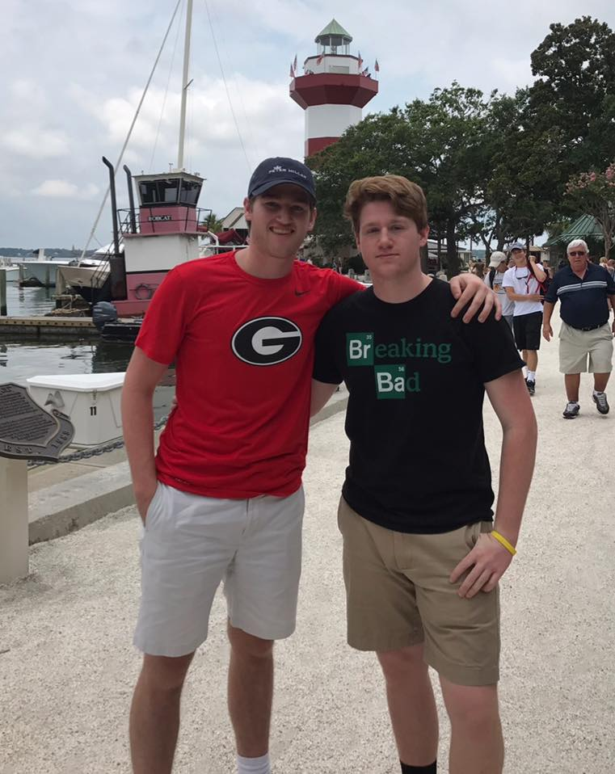
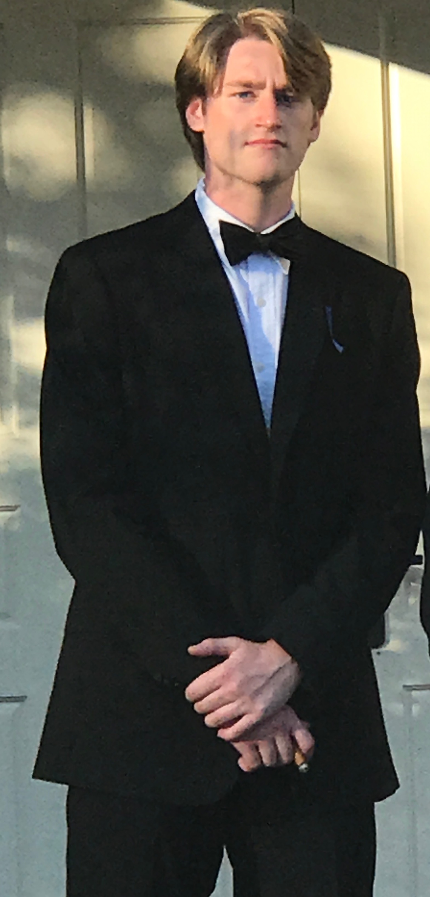

Growing up I was unbelievably blessed without ever realizing it. I grew up in a small town in West Tennessee and lived there with my Mom and Dad, my two older sisters, Mattie and Kalyn, and my younger brother Milller. In addition to my siblings I also have two amazing dogs, one a Great Dane named Harley and the other a Scottish Terrier and Poodle mix named Bentley. Back in Jackson, I attended a small private school called the University School of Jackson from the time I started kindergarten all the way until graduation. As a kid, I never stopped to think about how lucky I was to grow up in the environment I did. I had always had a loving group of family and friends supporting me at every step of the way and I was given endless opportunities that most people weren’t lucky enough to have. Looking back on my childhood now I realize that I took all of the people and opportunities for granted and that it was these people that shaped me into the person I am today.
|  | Coming from out of state the question I always get is, “What made you choose UGA?” My answer originally was that I wanted to do something different and go off on my own, away from the people I grew up around and experience something new and push myself. I knew just by reputation that the University of Georgia was one of the most academically competitive schools in the south and that if I went I could really challenge myself, earn a meaningful degree and find a high paying job upon graduation. Plus having been a football fan my entire life it was a huge bonus to be able to find all of this at an SEC school with a top ranked program. After my first semester I’ve realized that UGA is so much more than that and that I've made the right choice. From game days in Sanford, to the unbeatable food and the incredible music scene downtown, there is nothing that can even compare to Athens. |
As my first semester at UGA is wrapping up and the Thanksgiving holidays are rolling around, I’ve been forced to stop and consider once again just how lucky I am to be where I am. Throughout this first semester I have met tons of amazing people and made many wonderful memories, but I have made my fair share of mistakes as well. I came into my first semester at college just like everyone else, excited, full of confidence, and ready to take on the world. I came in and really wanted to get involved, meet new people, and make this the time of my life, but in the process I turned into the kind of person I used to hate. Somewhere during the semester I got so caught up in my past mistakes that it seemed like that was the only thing I could focus on. I could list off a thousand things I regret but in the middle of this struggle I found a quote that has helped erase this feeling. The quote reads, Don’t regret the past, just learn from it.
Instead of focusing on my past mistakes, I recognize how these experiences have worked to show me just how lucky I am and how much I have to be thankful for.
